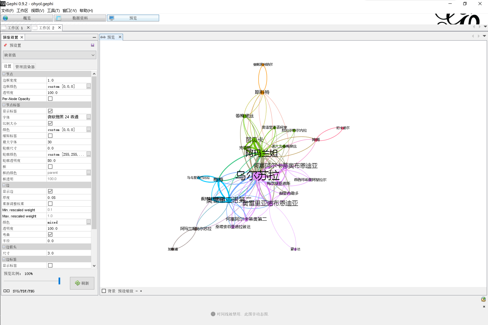

基于共现关系下的《百年孤独》人物关系提取
copyright: 徐渊 大连理工大学电信学部
gitbub: AlfredZee.github.io
reference: 实验楼
time: 2019-4-30
QQ: 1239820340（联系请注明原因）
$1项目的提出及意义
这两天刚好在纠结以后往哪个方向发展，林鸿飞教授带领的NLP组是主要考虑之一，就一直想找个相关的任务来做做，最近逛实验楼恰好发现了这样一个项目：提取《釜山行》电影中人物关系；加之大二的时候笔者竟然偷闲看了本《百年孤独》，就想着结合一下做一些自己的分析，没什么特别的意义，总之，keep learning!
$2数据的获取
本项目使用的txt文本是范曄翻译的《百年孤独》，请务必确认好翻译版本，由于英文中译会造成人名的不同，在之后构造词典时需要仔细的核准，笔者在这里花费了大量的时间精力，这是后期各项内容成功实现的基础。
$3共现原理（co-occurrency）
所谓的co-occurrency简单的来说就是某些entity在一定的range内同时出现，比如两个人的人名在一本书的同一章节，同一小节或者同一段出现，这样我们就可以假定他们之间有关系，下面给出一篇简单的介绍性博客（英文）链接：introduction。
下面为厌恶英文阅读或精力有限或网络环境较差的读者给出上述博客的主要内容：
- 定义
- 实体为节点（V）
- 关系为边（E）
- 实体识别
- 如果我们知道实体的特征，那么自然可以使用二分类模型来找到这些实体
- 如果我们不知道这样的特征，但我们知道知道一些实体，那么利用CNN也可以实现
- 当我们知道所有实体就不需要识别啦！（当然对于本项目是这样的，一本书中的人名我们问度娘就知道了）
- 关系识别
- 共现原理（见本节第一段）
- 过滤器方法：设置一个阈值，边的权重小于阈值则删去
- 网络细分：首先聚类（找到主要实体），然后删去与每个中心相连的不太重要的实体，但本方法和网络自身有较大关系
基于这样一个简单的原理，本项目有了一个可行的解决方案：我们人为的提供一个实体集合，利用共现原理，找到关系集合，再利用可视化软件转化输出结果即可，下面简单介绍Gephi软件。
$4Gephi简介
百度百科：Gephi是一款开源免费跨平台基于JVM的复杂网络分析软件,，其主要用于各种网络和复杂系统，动态和分层图的交互可视化与探测开源工具
本项目中，我们将边集和点集导入Gephi,调节各种参数以得到适合的可视化结果
官网链接：官网
下载安装提示：安装Gephi不需要太多的技能，但记住Gephi是依赖JAVA环境的，需要配置jdk8（如果不想出一些奇怪的问题，最好和笔者的版本保持一致，Gephi是0.9.2）
顺带一提，如果部分读者和笔者之前一样还不太了解java的一些概念（jvm,jre,jdk），这里也给出相应的介绍：java
$4数据处理
有了以上的基本认识之后，我们就可以开始着手处理数据了
$4.1 jieba库
简单实用的链接jieba
三种分词模式：
- 精确模式，试图将句子最精确地切开，适合文本分析
- 全模式，把句子中所有的可以成词的词语都扫描出来, 速度非常快，但是不能解决歧义
- 搜索引擎模式，在精确模式的基础上，对长词再次切分，提高召回率，适合用于搜索引擎分词
$4.2 去除文本中的点
在实际使用jieba库的过程中，发现英文人名中的”·”作为特殊字符，对分词有非常大的影响，笔者一开始考虑阅读以下jieba文档，找找看有没有处理特殊字符的方法，但转念一想，我们可以将词典和书中的”·”都直接去掉，然后正常处理即可，本步骤代码如下：
def delete_point (infile, outfile):
inopen = open(infile, 'r', encoding="utf-8")
outopen = open(outfile, 'w', encoding="utf-8")
lines = inopen.readlines()
for line in lines:
for db in line:
if db == '·':
continue
outopen.write(db)
inopen.close()
outopen.close()
delete_point("book.txt", "book1.txt")
$4.3 边集点集的提取
names字典保存人物名字和出现频次
relationships字典保存人物和对应的一个内部关系字典，该字典是和每个人物出现在同一行中的人名和出现频次
lineNames列表，内部元素是为每行构建的列表，内部列表中保存每行出项的人名
import os, sys
import jieba, codecs, math
import jieba.posseg as pseg
names = {}
relationships = {}
lineNames = []
jieba载入自定义词典
jieba.load_userdict("dict1.txt")
下面是自定义词典的截图：
其中第一列为词语，第二列为词频，第三列为词性（nr代表人名，其他词性可参考词性，自定义词典）
对文本的每一行进行分词并记录每行出现的人名，统计人名频次和创建相应内部关系字典：
with codecs.open("book1.txt","r", "utf-8") as f:
for line in f.readlines():
poss = pseg.cut(line)
lineNames.append([])
for w in poss:
if w.flag != "nr" or len(w.word) < 2:
continue
lineNames[-1].append(w.word)
if names.get(w.word) is None:
names[w.word] = 0
relationships[w.word] = {}
names[w.word] += 1
对每行重新扫描以记录边的权重（注意name1和name2是同一行中的）：
for line in lineNames:
for name1 in line:
for name2 in line:
if name1 == name2:
continue
if relationships[name1].get(name2) is None:
relationships[name1][name2] = 1
else:
relationships[name1][name2] += 1
设置过滤器，也就是阈值（times > 20 和 w > 40），将结果写入csv格式文件（0.9.2Gephi只能导入csv），以输入Gephi：
with codecs.open("ohyol_node.csv", "w", "gbk") as f:
f.write("Id Label Weight\r\n")
for name, times in names.items():
if times > 20:
f.write(name + " " + name + " " + str(times) + "\r\n")
with codecs.open("ohyol_edge.csv", "w", "gbk") as f:
f.write("Source Target Weight\r\n")
for name, edges in relationships.items():
for v, w in edges.items():
if w > 40:
f.write(name + " " + v + " " + str(w) + "\r\n")
$4.4 结果
节点集：
边集：
Gephi的使用
步骤：
- 导入电子表（边表和节点表），分隔符选择空格，编码选择gbk
- 选择数据资料视图，删除冗余的数据（笔者去除了奥雷，阿尔卡，明白等等无关或错误的数据），并且填补label列（使用复制数据到其他列）
- 回到概览视图进行平均度和模块化计算（模块化计算时resolution设为0.5）
- 设置相应的外观（主窗口左栏）
- 设置布局为force atlas，斥度设为200000，吸引强度为1，点击运行，稍后暂停
- 得到下图：

- 切换到预览视图，左栏显示标签，调节字体，比例大小，点击刷新
- 得到下图：
总结
通过复现本项目，希望读者有以下收获：
- 熟悉共现网络
- 熟悉Gephi及其使用
- 了解jvm,jre,jdk三者关系
- 熟悉jieba库的相关函数，jieba的三种分词模式
- 熟悉如何从本文中挖掘相应的关系的流程